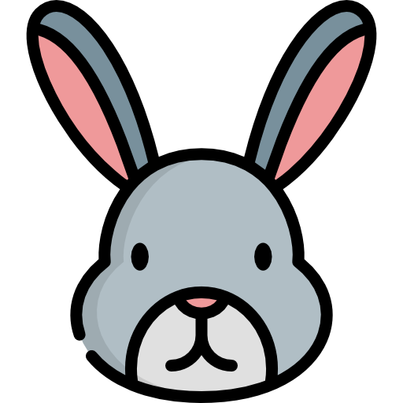

P
|
0min
|

|
0
Front-end developer test project
Your goal is to make a page that looks exactly like this one, and has the ability to create H1 text simply by typing / then 1, then typing text, and hitting enter.